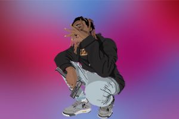
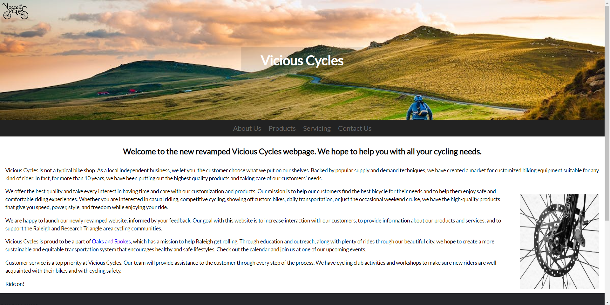
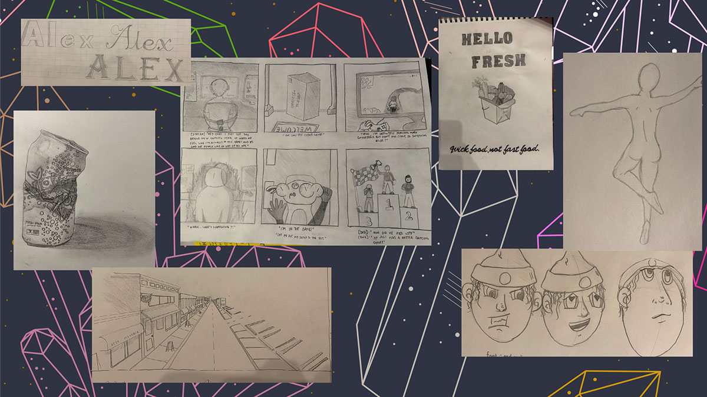

Alexander Bowen
Graphic Designer
Hi, I am currently an advertising and graphic design student at Wake Tech Community College! This is my second year in the program and I have enjoyed finding myself out more as an artist. I have always been into creativity and working with my hands. This website is a display of my work and skills.
Featured Projects
Cloudy Nueve
This is the kind of style I found myself to like. It's a digital drawing of my friend who was a rapper, Cloudy Nueve. This piece means a lot to me because of how close we were. Unfortunately he passed away in 2020, but not before he taught me and my friend a few valuable lessons.
View ProjectVicious Cycles
As part of my major, I have to learn a little bit of Web Development and Design. This is the website I created for one of our projects. It is a website to sell bicycles, motorcycles, scooters and custom equipment for a company called Vicious Cycles.
View WebsiteDrawing Portfolio
Another one of my classes last semester had us tune back into the fundamentals of drawing. Grabbing a pen and paper they got us to sketch and work on vital drawing techniques as a foundation. Here is my final portfolio from the class (made using Adobe Express).
View PortfolioWork Experience
Although I have not yet worked in the field of graphic design, I have found myself in positions and opportunities to show my creativity and contribute to projects.
Apprentice Carpenter
Witherspoon Woodworks
December 2019-March 2020
Apprentice to an expert carpenter who made custom cabinetry in the greater Raleigh area. Ranging from things like microwave hoods to table legs.
Job Responsibilities:
- Painted, delivered, and installed custom cabinetry, table legs and microwave hoods.
- Assisted the owner in file organization and managing deadlines.
Education
Wake Tech Community College - Raleigh, NC
AAS Degree in Advertising and Graphic Design, 2022-present
Graduated from Enloe Magnet High School, 2016-2019